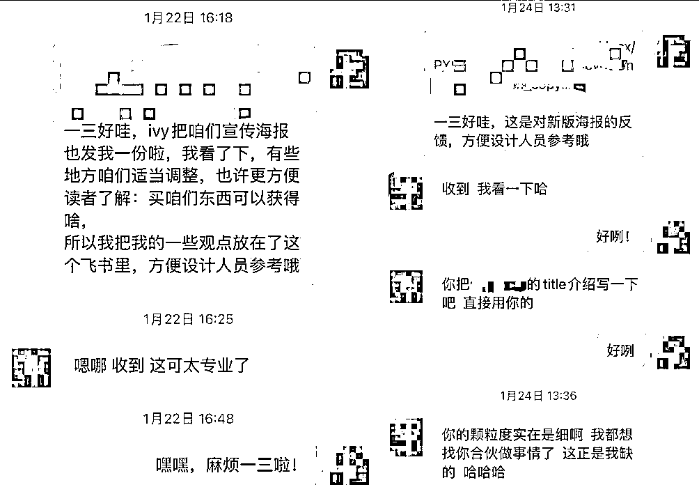

来源：https://ht16ej1tui.feishu.cn/docx/TEiLdqr5BopyvDxB4IZcC0arnSf
Hi，我是珍妮，教育赛道1100-1600w gmv/年的幕后运营操盘手，和陈铭ivy合伙创业。
这是我们之前写过的笔记，欢迎戳戳。
复盘1：
https://t.zsxq.com/17tvEOFgZ
粉丝3000月营收20万，小红书低粉高变现的蓝海攻略分享
复盘2：
https://t.zsxq.com/17RnIxsp7
小红书教育赛道GMV1600万/年，小团队创业心法
复盘3：
https://t.zsxq.com/17clCvA0e
老板避雷手册|年1100w营收背后，如何识别不合适的运营人员、合作商、合伙人？
我因为在运营上踩过足够多的坑，导致我们23年少变现500w。你也看到了，22年我们是1600w营收，23年只有1100w。今天我会分享：哪些细节，是运营端不能忽视的。
（注：本次分享的内容，包括公域运营端的引流&私域运营端的宣传，以小红书留学赛道和聚光投放训练营为例）。
1.运营端的底层逻辑：为什么我学了这么多却还是没法变现
（这次仅挑了2点来写，有机会我再补充。）
1.1这真的是我要找的对标账号吗？
1.2我的产品真的能在这个赛道有「人无我有」的竞争优势吗？我有在笔记中体现这种优势吗？
2.如果你的钱越赚越少，你要怎么调整大方向
2.1 赚这两类人的钱，你会越赚越多
2.2 为什么现在赚中产的钱，你会越赚越少？
2.3 如果你还想赚中产的钱，你要怎么调整大方向
3.运营细节实操分享（以聚光投放训练营宣传海报设计为例）
3.1 配色分析
3.2 用户视角
3.2.1 先确定你的目标客户群是谁
3.2.2 找到你的目标客户群在什么位置，分析在哪里做曝光能让对方看到自己？
3.2.3 想想你的目标用户群需要什么
3.2.4 确定你的产品和同行产品有什么区别，你要怎么去体现「人无我有」你的优势
3.2.5 多用数字，尤其是多用奇数
3.2.6 多说大白话，少说文绉绉的话
3.2.7 确保你的客户能看懂你在说什么
4.致谢（包含：老板要怎样从现有员工中找到下一个“我”？）
很多运营一上来就找对标账号，找爆款抄爆款，最后做了半天，涨了一堆粉根本无法变现，或者变现天花板极度有限，又或者连粉丝都没涨几个。
之所以会发生这样的事情，是因为学了很多课程，杂七杂八技能掌握了一大堆，却忽视了商业运转的底层逻辑。他们从没有思考过：
1.1 这真的是我要找的对标账号吗？
1.2 我的产品真的能在这个赛道有「人无我有」的竞争优势吗？我有在笔记中体现这种优势吗？
我还是以留学赛道为例，各个大ip都喜欢宣传留学赛道，朋友圈发的也是：今年我们的一个ip死号好多，最近我们发现了新的打法，重新起了多少个号等等。
商业运转的逻辑之一，就是：很多人刚做出一点点成就的时候，就拿出去宣传了。
你可以半信，但你不能全信。
这个ip我认识，我就安排人扒了一下数据，把他20多个矩阵号全扒了一遍，把每篇笔记的发布时间、点赞藏评论数据、每个账号的起号时间、最早发布的第一篇笔记都扒了。
扒完后我因为比较忙，就没实操他的方法，只和ivy说了句：这个人的打法我们可以模仿。
好家伙，可幸好我没带整个团队去实操这个打法。因为这个ip 20多个号，有18个号在我扒完数据的一个月后集体停更了。
（因为如果是被封号，不至于带蓝v矩阵号也全都挂了，世界上谁这么惨能一次被封18个号呀，这明显就是停更了呀。）
这说明：他已经用真金白银和自己的精力，踩出了一条血淋淋的道路，告诉你这个打法走不通。
你如果只看到他的爆款，只看到他一个号停更，不知道他几乎所有账号都停更了，你就很难看清楚完整的棋谱。如果这时候你去抄他爆款，你就是下一个他。
他们的利润是真是假，你不知道。
如果他的利润是真的，说明要么我搜的这些对标账号，全是他用来迷惑对手的号，他们还有隐藏号是我搜不到、识别不出来的。
又或者他其实根本不靠这个项目赚钱，这个项目是他的试点项目。他赚钱的大头，在你看不见的地方。他只是在宣传时，把利润挂到了这个项目上，混淆视听，不愿意让你知道真赚钱的项目。
又或者他的引流是真的，但他私域有别的打法，你没付费你看不到。
可是这个底层最重要的注意事项，很少被人提到。你只会被告知：你要抄爆款啦，你没赚到钱就是你爆款没抄好，笔记不够好，blabla
可是，救命！这个写出爆款的人自己都挂了我还怎么抄！
你技能再花里胡哨，九阴真经练得再牛逼，你连爆款都抄错了你怎么赚钱！
我辛辛苦苦学小红书运营学销售学转化！难道是为了写出一堆爆款发朋友圈获得点虚名吗？
我是为了赚钱啊！！
这种错误的爆款值得我学吗？它压根就不配！
运营tip 1：
要追踪你的对标账号以及他们的矩阵号，看他们有没有突然停更。
别管别人怎么宣传自己多牛逼，你得亲身调查。你要拨开那些虚的东西，那些别人故意迷惑你的东西，去看实际数据。
大多数没有赚到钱的人，是因为这4项都没有「人无我有」的优势。
你缺1，你就缺人给你不断挖新流量。
你缺2，你就很难成交。
你缺3，客户就不会续购了。
你缺4，客户就不会被你吸引，也不会非得在你这里成交。
其中2，我是不太懂的，但是Ivy很懂。
关于1，3，4，我都是实操过的，并且我们的a业务，可以做到老客户不断推荐新人，没有聚光投放的日子里，一次引流，客户反复续购。年底的时候，我们一算自己到手的钱，发现利润达56%，这仅仅是靠两个小红书号做起来的。
这就是1-4做得好的力量，那一年的钱吹过来得太快，以至于我能用一年时间办完婚礼，又备孕又生孩还顺带做了1600w+ gmv，而且竟然还有时间练孕妇瑜伽，在家练厨艺，每周做两三趟头发护理。
我以留学赛道为例，我有泡同行群，同行说留学赛道现在不好做，要抱团取暖。
这么说吧，因为yq，很多中产收入大大缩水，能去英澳的现在去了小众国家，只能去小众国家的，这会不准备留学了。
而那些依旧还能去英澳上学的，他们付钱开始没那么爽快。
很多人还在做英澳硕士留学，可是三年前因为yq去读研的人，现在已经要申双硕士要申博了。
此外，在小红书这两三年被中介拿素人号测评号种草英澳留学中介后，留学生看到这种素人号推英澳中介就想骂娘，甚至开始发帖子说：再也不在小红书找留学中介了，全是托。
在留学行业，
如果你的产品不够顶尖，去服务最高层次的留美富人，
如果也不够性价比，服务去小众国家的人。却还停留在英澳赛道去赚中产的钱，你就是会越来越没钱。
因为你的客户，已经改变观念了。
你不知道他们改变了观念，是因为你一直盯着同行的爆款，却从没有花心思去琢磨过客户的需求：客户的主页发了什么，他们在抱怨什么。
他们在抱怨「家里破产，自己突然上不了学」。他们在抱怨「爸爸说今年生意不好做，让我把留学的安排调整调整等等」。
所以呀，你天天盯着同行有啥用，同行只能参考，客户才是买你产品的人。
同行掉坑里，你盯着同行，你也只能跟着一块掉坑里。
如果你现在还在做英澳留学，甚至你只懂文科留学，做不了理工科，唯二的优势就是免中介费+和同行看起来没啥区别的好评，你该怎么办？
英澳留学中介业绩下滑的解决方法：
1.不再做英澳，改成做小众国家。
2.继续做英澳，改变你的产品搭配，提高性价比。比如有的人专做半diy，从ps，cv，背景提升，润色，成绩单，全部可以单卖，吸引了很多人在下面咨询，直到现在都有礼貌问价。
他们通过这个方案，让别人觉得：这个中介好良心好真诚，买他！
最后客户还是一样买了中介的经典全家桶，豪华全家桶等礼包。（比如经典全家桶可能包括ps,cv,成绩单等）
当然可能有人反驳我：同行里有部分人依旧英澳留学做的很香。我为什么不能做？
是，不管是啥赛道都有赚钱的，你不能拿别人的钱和新玩家比。你得知道：别人是赚钱，可他们前些年赚得比这更多啊！为什么现在会下滑呢？
而且对方已经铺了这么多矩阵号了，也就是因为留学行业利润大，才会在两三年时间就在小红书被学生骂：全是托。
就是因为利润大，这个行业的运营打法才变化快。
别的行业还在用留学行业两三年前的玩法，每半年甚至每一年才有一次行业运营变动。但是留学行业，每三个月，客户就看腻这套玩法了，因为太多商家在抄爆款了。
你作为一个刚开始做小红书留学行业的运营新人，你拿什么，和别人的矩阵号比？和别人比运营打法更新速度，还是跟人比矩阵号数量？
如果你做的还是英澳留学申请这个品，你只能从我上面提到的解决方案去破局。
要么你就干脆转行找别的蓝海赛道，要么你别针对留学申请学生所在的年龄去写稿子，因为这个年龄段的孩子，把一切都看透了。
要么，你换平台。但是小红书是留学生扎堆的平台，其他任何平台的留学生都不会有这里聚焦，换平台我估计你会心痛。
关于英澳留学，我给出的解决方案，其实就是从产品四大优势中的1和4去改变（你的运营能力+ 你的产品本身和同行的区别）。
运营tip2：
从以上4个方面，去找「人无我有」的优势。如果你都没有，就换目标客户，换平台，换品类，换赛道。
社会可以分为三层：顶阶富人，中产，底层。
大部分人没有足够的能力服务顶阶富人，只能服务中产和底层。
yq三年下来，中产要么被裁员，要么收入缩水，所以现在花钱比以前慎重很多。
如果你的产品以前都靠中产赚钱，你现在赚的钱就是会越来越少。
顶阶富人，现在依旧有钱，而底层也永远需要劳动力，不可能被裁员。
唯独中产坐办公室的多，干的也不是最底层的活，裁员就裁员吧，降薪就降薪吧，中产心里苦，但中产不得不接受，否则就有下一个中产为了保住工作而代替他，甚至有下一个廉价大学生来代替中产的岗位。
中产的钱包缩水，你还拿以前的产品卖给中产，中产又不傻，干嘛买你账呢。
现在这个年头，赚顶阶富人和赚底层的钱，你才会越来越有钱。而且未来中guo会发展成M型社会，中产会越来越少，中产要么滑落到底层，要么攀到上一层。
所以，每个生意人，如果你的客户基本都是中产，你一定要提前做好产品转型的准备。
如果你非要继续赚中产的钱，那你就要提供一个性价比最高的产品，用比底层产品高一点点的价格，不能高太多，去赚中产的钱。
中产以前最爱买买买，从百达翡丽买到各种名牌包，偶尔轻奢旅游，现在他们开始注重性价比了。
现在很多大商场都流行卖“洗个头发”，其实就是给以前爱做发型的中产，提供了一个价格偏低的护理方案，争取赚走中产手里的闲钱。
以上是关于商业运转底层逻辑的一丢丢分享，希望对大家有所帮助。
接下来的分享，和运营的颗粒度有关。
我会以：「如何设计你的宣传海报」为例，分享做运营的人到底要观察哪些要素。
3.1 配色分析
3.2 用户视角
3.2.1 先确定你的目标客户群是谁
3.2.2 找到你的目标客户群在什么位置，分析在哪里做曝光能让对方看到自己？
3.2.3 想想你的目标用户群需要什么
3.2.4 确定你的产品和同行产品有什么区别，你要怎么去体现「人无我有」你的优势
3.2.5 多用数字，尤其是多用奇数
3.2.6 多说大白话，少说文绉绉的话
3.2.7 确保你的客户能看懂你在说什么
今年1月，内容经纪人一三组了个局：聚光投放训练营，把ivy、叁斤、王自在、阳阳、我联合在一起准备打磨一个训练营。
最后由于大家各自有自己主要业务要跑，而聚光训练营是要带老板们设置调整聚光投放的，代表要从笔记源头去更改，从聚光设置上去更改。
工作量太大，我们都撑不住一个30天的训练营，而准备改做成知识星球。
我发这个不是让大家来买训练营，因为我们不做了，但把它掏出来，可以方便大家观察：运营打磨的细节是哪里。
这是最开始的原始海报（1版），这是打磨后的海报（2版&3版）（千万别扫里面的二维码交钱，因为我们最后没做训练营了！）

（左中右分别是1版&2版&3版，找不同的时间到啦！）
这是当时我的反馈：
重点分析：
红黑和红白都是对比色系，考虑到其他地方已经有松果的logo，这时候sunguo ip不需要再那么显眼，所以弱化成白色。
一定要统一颜色。对于一张海报来说，主题色系有两个就够了，比如红黑，红白。不要又红又黑又白又蓝又黄。（珍妮呆滞脸）
我当时上传我寸照的时候，考虑到我好多年没有出门上过班了，临时掏不出寸照，就妙鸭相机生成了一下。妙鸭相机美颜不愧牛逼，生成了很多个跟本人完全不相符的我，但我也凑合着发了。
发给一三的时候，我打包了四张照片给她，分别穿：浅黄色衣服，白色衣服，深色衣服。因为我不知道其他人的寸照是啥颜色的衣服，我想和大家的主色调统一一下，方便设计人员随时替换我的照片。
收到海报的时候我都愣住了，Ivy穿粉色衬衫，叁斤穿蓝色，王自在穿黑色，阳阳不愿意露脸，只出现了白色人头，差点把我笑出声。
我们的目标用户主要是：
在小红书平台「已经或即将开聚光的老板和做投放的投手」。
而且，我们尤其针对做矩阵号的老板，而不是单个账号的个人ip。
(因为单个账号的个人ip已经能从小红书「关注流量」获得很多流量了，除非他想扩张业绩才会考虑铺ip矩阵号）
所以大家会看到我一开始写的那篇「老板避雷手册：如何识别不靠谱的运营、合作商、合伙人？」https://t.zsxq.com/17clCvA0e
其实这也是为当时的训练营做铺垫而写的。
我们的目标客户群，不仅仅是在生财，还可能是小红书在搜怎么做聚光投放的老板，还可能是关注叁斤等人公众号的老板。
所以，在介绍叁斤的时候，我们不能写：「航海教练」，因为生财以外的人不知道航海是什么。
在介绍ivy的时候，不能只写「留学行业公司创始人」，因为生财以外的人不一定认识ivy，不知道ivy曾经做过什么。Ivy的往期精华请戳：https://t.zsxq.com/17tvEOFgZ
于是有了我下方的反馈：
针对老板，他想要的不是看我们怎么吹牛逼，他就想要一个降本增效的解决方案，让他的笔记跑的通，有更多人礼貌问价，成功加V。
尤其是做矩阵号的老板，他想知道：怎样比同行花更少的钱，占据更大的市场，创造更大的利润。
而且，跑矩阵号的老板基本都不喜欢透露自己的产品或者账号，所以不可能拉群把老板们的投放过程拿出来分析并且做案例，只能单独拉小群带他们实操，然后配上通用版的降本增效投放课程。
所以，老板们都需要提高自己的矩阵号「搜索流量」和「首页推荐」流量。
解决方案是：
A. 从素材源头去调整，把笔记写对。笔记写不对，写出了爆款也是浪费钱。没写出爆款也花不出投放。
B. 拿到这个行业的内部投放数据或者经验，让有经验的投手教自己。
此外，所有用户，都对一上来就标明价格的产品不感兴趣，不然营销味道太重了。
不要急着收钱，要先想想自己能给用户带来什么。
尤其是老板，老板只优先关心产品能不能解决自己的用户痛点，能解决他的需求，价格合适，他就买了。
不能解决他的需求，价格再便宜他也懒得买。
价格超预算，他一样不会买。
老板不是大冤种，他们能把公司从0到1做起来，他们脑子里的账单计算系统比在基层工作的人都强。
所以没有必要在海报最上端就放一个收款码。
所以，有了我的下方反馈图：
这是我当时的修改方案：
重点分析：
关于“5位，8大，15种，20倍”这个词，这里我调整了顺序，把15种调在了20倍前面。
至于加这四个关键词“赛道布局”“精准投放”“扩大咨询”“30天跑通”的目的，都是为了给读者揭示一个”结果“让他知道我能从这得到什么。
很多人都在做ip训练营，或者带老板们搞钱。
有的人是提供一个已经跑通的项目，
有的是提供合伙人平台方便交流&资源整合，
有的是做细分赛道，如教育赛道，电商赛道。
有的是做平台细分，如带你在小红书赚钱，在抖音赚钱。
有的是做环节细分，如：运营课程，销售课程，公域成交课，私域成交课等等。
而我们提供的，是「聚光投放训练」。
聚光是23年6月火起来的，小红书慢慢开启的商业化步骤。很多老板之前只会做运营，却没有投放经验，所以花出去了很多钱，也没打出个水花出来，只是为了给小红书交保护费罢了。
而Ivy、叁斤、王自在、阳阳，恰好懂投放，尤其是叁斤和王自在，背后有很丰富的投放实操经验，叁斤和王自在本来就是投手，阳阳是小红书背后的人，他们操盘了家居、文旅、电商等好几个赛道的背后投放，有很多实操数据。
这就是「人无我有」的优势。因为大部分做ip训练营的人，没有丰富的聚光投放实操经验。
于是有了我的下方反馈：
这是当时我的反馈：
重点分析：
“素材调整|拆解真投”一词，是为了让别人知道，我们除了真正教投放，还会解决源头问题：素材调整。 因为如果素材不好，投放投出花来也跑不通。
“长尾流量”和“首页推荐”一词，是因为：小红书的矩阵号流量基本就分两种：首页推荐和搜索流量。搜索流量一般都是长尾流量，所以刻意在这里做了拆分。
至于小红书“关注页面”来的流量，一般是做个人ip的人才能拿到的流量。如果只是矩阵号，缺乏ip人设，是很难拿到关注流量的，除非你做的是提供情绪价值的账号（可参考我上一篇文章）。
重点分析：
“30天人人下场实操”这句话是为了让目标客户知道，这是有实操和及时方案调整的。
“注：暂时没有心仪赛道的老板，可用我们自营盘的赛道跑流量（会提供笔记写作培训，需自己付费投放聚光）”这句话是给没有开通聚光的老板看的。
备注：
最后，“大哥带小弟”的这一part没有加，因为Ivy觉得她会很尴尬，她真的非常非常不喜欢给自己抬咖。
我遇到过一些老板，老喜欢吹牛逼了，明明负债还能对外宣称跟他赚钱能搞个几千万的盘子。
像Ivy这样实实在在不吹牛逼的，很少见，以至于有时候我都觉得：明明她可以赚更多钱，结果因为不吹牛逼少赚了一笔。
要多用数字，能用奇数表达的东西，就不要用偶数来表达，也不要用“多份”“许多”这种模糊的词来表达。比如你可以用：3分钟学会blabla，3,5,7,9，这些都是很好的数字。
于是有了下图反馈
要讲大白话，能用3个词说完的东西，多说2个词去表达自己的意思，都是对用户的不尊重。
这是我当时的反馈：

用户不一定对你的产品有了解，甚至不一定懂什么叫“聚光”更加不懂下图中的“水下生存”了。
就像我在上篇文章提到的，在小红书做盖洛普，不要急着在标题里植入盖洛普，如果非要植入，要伴随着其他关键词一起植入。因为不是所有用户都知道盖洛普是啥。
于是有了下图的反馈：
此文感谢Ivy，说实话，你们看到的我是一个连续两年做出千万gmv的运营操盘手，但我会有这么多经验，是因为我踩的坑也足够多。
我每踩一个坑，都是在浪费公司账户的钱，是在变相亏损我司利益。
创业公司，现金流最重要。
但Ivy愿意让我去尝试，并且会在roi不对劲的时候及时提醒我。
不仅如此，
Ivy她家阿姨手打的牛肉丸也好好吃。我不仅蹭吃蹭喝，我一个算不清账的人竟然还能当上老板并且在家工作第四年了还小日子过得很不错。
没有她的鼓励、支持、和陪伴，没有她的销售和转化，没有她的战略能力，没有她在前方把控大方向的能力，我就是无头苍蝇，我做不到现在的成绩，过不上现在的生活，不会有现在这篇分享。
我说我真的不喜欢对外接合作，算账可以消耗掉我所有的精力，每次i人戴上e人面具社交结束后，要在沙发上躺好久才能恢复精力。我就想好好打磨运营。
我问Ivy能不能做咱们对外的商务合作对接人。她答应了，但其实她也是个i人，你让她频繁社交，她也很累，她身体本来也没有特别好，虽然痊愈，但依旧在继续调养。可她还是撑起了这片天。没有她，真的就没有我。
其实这个世界上，像我一样，懂点英语，懂点翻译，懂点设计，做过公众号小编，当过老师，想要赚钱的人，有很多。
为什么会是我，做出这个业绩呢？而且只用了短短两年时间呢？
因为我的前前前前老板觉得我做助教做的很好，他希望我做助教管理员。于是我跳槽了。
我的前前前老板&前前老板，觉得我做老师做得很好，希望我当金牌老师，告诉我你才25呢找啥对象，你看我30多了也没结婚，我们公司好多人都没对象呢。好好打工吧你。
于是我辞职了。我心里：“你都没对象？这个公司看来不能混了。钻石王老五都没对象，我本来就不爱找同行，别把你的婚恋运气传给我，导致我也孤单过一生，再见了再见了。”
我的前老板，希望我一直做他的金牌写作机器，把控质量，倒时差熬夜。同时给我一个月1.5-1.8万不太稳定的薪水，我每天都要操心下个月万一只有1万要怎么办，还导致当时的我长了一脸痘影响我找对象，出去过个中秋节还要正在泡温泉的我临时熬夜帮忙补锅。所以我辞职了。
前老板在我辞职两年后，还在问我在做什么工作。前前老板，23年夏天还在给我打电话，喊我回去上班。我都不好意思说：这种拼死拼活挣两百块的班，我还是...还是享受不了这个福气。（哭笑）
只有Ivy，她看出来了我想要什么，我想要的不是每天管助教，不是做一个各个校区跑来跑去没有交通补贴的上课+改作业机器人，不是为了赚钱而变丑。
我想要的是更大的工作上的成就感，我想要自由安排工作时间，我想每天睡个饱觉，我厌恶通勤，我不想因为每天工作耽误我找对象，刚分手完呢，那时候我都25了，不趁着年轻颜值凑合的时候找个我能够到的最好的对象，我还啥时候找啊？我还忙着结婚生孩子呢，我想要优雅的老去，做60岁时小区里最漂亮最有气质的老太太，广场舞最牛逼的领班，同时还收我好几个孩子给我送的金条，我就每天抱着金条用牙啃啃然后留给我孙子孙女。
这些Ivy都知道，前东家只关心我有没有被安排在他们想给我安排的位置，只关心我有没有当廉价劳动力给他们创造利润，没有关心过：我想坐到什么位置，我想过怎样的生活。
但是Ivy都懂，她希望我有更大的可能性。
她是我的伯乐，因为有她在，我才有了今天。
其实每个老板，手里一定有一个我这样的人，关键在于，你有没有发现这个人的需求，并且满足他，愿意相信他：「他真的对单飞没有兴趣，就想过上有大哥罩着的滋润日子」，愿意让他去放手干，并且在有问题时及时提醒他。一旦你能让他满足，他会给你创造巨额的利润。
你在找千里马，千里马也在找你。
感谢靠谱，我的每篇稿子，都是靠谱在背后指导的，结果每篇都加精。这篇稿子一开始是没有什么逻辑和条理的，看着特别乱，我意识不到。
但是靠谱会告诉我：“无论这是你第几次写稿子，都不要默认别人已经看过你以前写的东西，很了解你。你都要把这当做别人第一次认识你的机会，要把自己的框架捋清楚，你说的运营端，是指的公域？还是私域？要把它说明白。你的标题，要怎样加强感情色彩，让人看一眼就点进去呢。”
感谢生财这个圈子，当时发帖子的时候，没有想到会被这么多大佬加V。
我一直都想了解人工智能儿童教育行业，但并没有途径，结果在生财发帖，让我遇到了刘娜，她是上海高校工科教师，深耕人工智能算法十余年，机器人方向从业5年，读博期间有过私域副业经验，高峰期一年赚近100万，
而且她准备做儿童教育赛道，直接戳中了我这种准备等孩子刚满5岁就送小孩学ai的老母亲的痛点。
感谢玩赚合伙人，
我加入玩赚合伙人的时候，一开始想的是找靠谱和芷蓝姐帮我定位新赛道的变现方法，结果加入当天又遇到了一泽，这是他的往期精华
https://t.zsxq.com/11Y12be1r
https://b23.tv/ic8qBDw
我找他沟通了矩阵号玩家最需要的小红书扒数据教程，结果他当天晚上就发了我示范视频，于是我又把我的需求告诉他，期待的搓手手，等他打造一个最适合小红书、尤其是小红书矩阵号玩家真正需要的扒数据方法。去掉所有花里胡哨的功能，只要最精简，最便捷，最有效，最能保护企业隐私的机器人扒数据方法。
相当于加了玩赚合伙人，有了靠谱和芷蓝姐的指点，还一下子认识了很多各行各业的精英，血赚！
感谢拱卒，我在做聚光投放训练营设计的时候，其实我们遇到过很大的bug，比如：“不是所有的老板，都已经开了聚光。对于没有开聚光或者没有自营赛道的老板，ivy和我可以拿我们自有的某个赛道给老板们跑，并且做笔记培训。但是返佣时间因为产品性质的问题，会比较长，要怎么解决呢？”拱卒给我的建议非常有效。虽然最后由于个人原因，我们没把训练营推向市场，但我还是学到了很多。
感谢叶叶，她是盖洛普教练，我强烈推荐所有在和朋友一块做生意/准备创业的老板，都先找叶叶去测一遍盖洛普，看看你们要怎样搭配，最互补，最适合。ivy和我遇到叶叶，是2021年年初的事了，那时候我们就被她的优势分析折服。这些年里，叶叶做的咨询案例越来越多，她给的建议，一定会适合各位老板！
最后，祝大家24年龙年大吉、财旺福旺运道旺，人旺福旺身体旺、你会旺！你会旺上加旺！